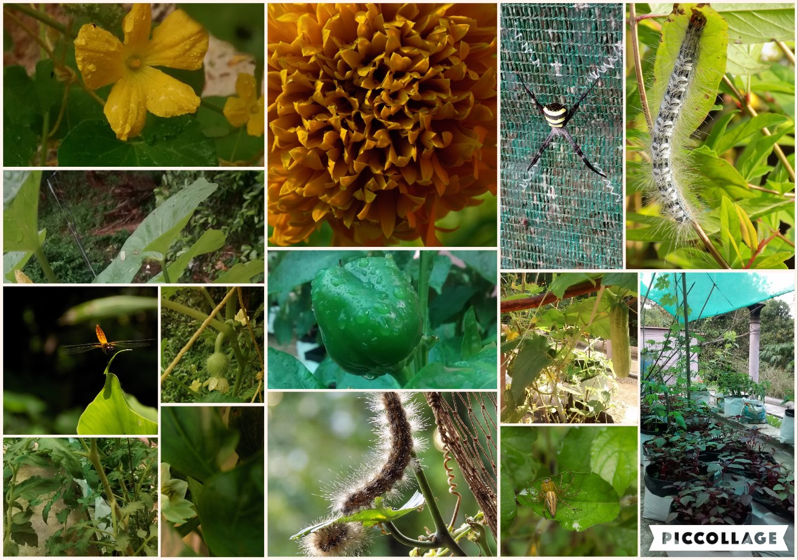
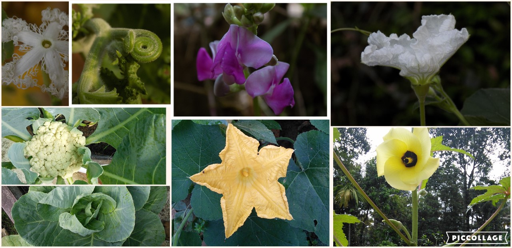
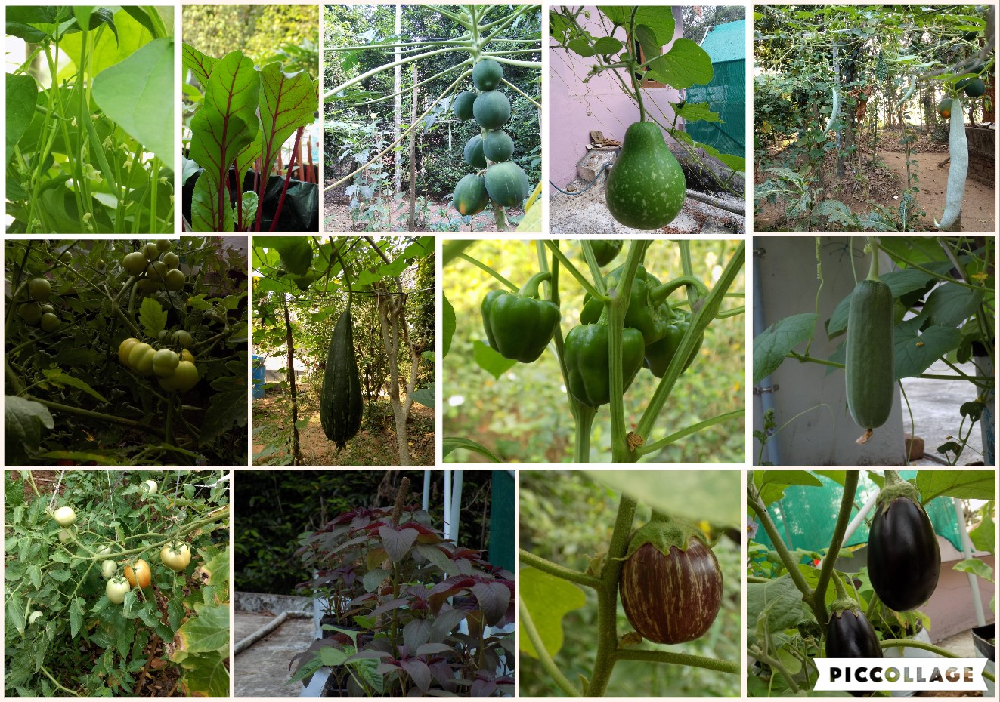
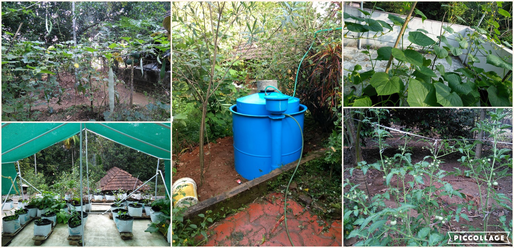
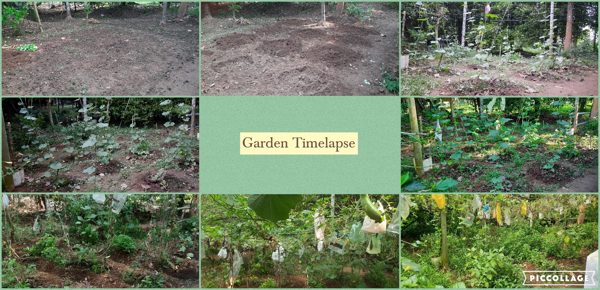
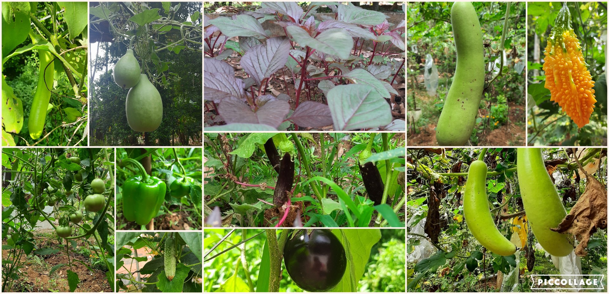
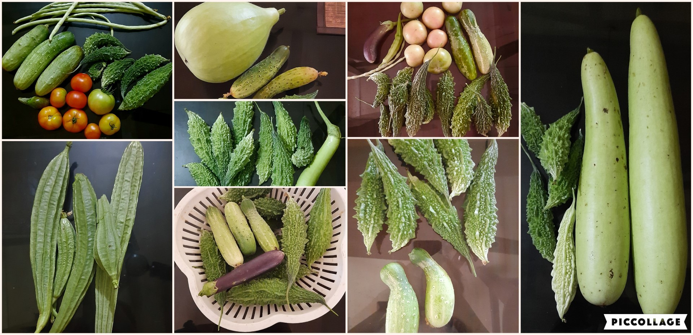

My Gardening Experience
Nearly 5 years ago, I decided to be more conscious about my health and bring a change to my monotonous lifestyle - to spend a good amount of time away from the screen. I searched for options and terrace gardening sounded interesting to me. I started with nearly 30 grow bags, brought some seeds online from Biocarve, and also some seeds locally. The potting mix was 50% garden topsoil, 25% cocopeat, and 25% vermicompost and for every 5 kg added around 50g of bone meal and neem cake. That was a great start - I harvested red amaranth, cucumbers, capsicum, and long yard beans. It was a divine experience observing seedlings, flowers turning to veggies, and watching bees and insects. I learned a lot about natural ways of pest control, attracting pollinators, and maintaining soil quality.

I started spending more time in Nature - and the next season I expanded the garden to my backyard and experimented with a lot more veggies. My husband helped me out with preparing the soil and we installed a portable biogas plant to meet plant nutritional requirements. The slurry from our kitchen waste helped the plants to grow, especially the greens. Along with it, I provided bone meal and seaweed solution to the potted plants. I had a great harvest - tomatoes were the stars - then brinjal, capsicum, bitter gourd, sponge gourd, cucumber, red amaranth, french beans, and chilies.
  
After a 2 years break (maternity), I restarted my gardening- this time aiming for something higher - a self-sustainable farm. Motherhood changed my views and lifestyle a lot. I was more conscious about what we ate and especially what I gave to my kid. A balanced diet with fresh and pesticide-free food was really hard to get. I could get fresh greens from my ancestral home farm and some native veggies like raw papaya, plantain, elephant foot yam, taro, jackfruit, banana, and mangoes to name a few. But again, the main veggies that we commonly use had to be brought from the market. So I decided to get my hands dirty -I thought I would start my experiments in a section of uncultivated land on the farm. I started with the easy ones - bitter gourds, long yard beans, ladies' finger, and brinjal. And I let the native greens grow alongside, without weeding the plot, so that I could get leafy veggies every 2 days. My frequent travels affected the garden, but still, I got a good harvest. Looking back, I have improved a lot in my gardening skills as well as my view about farming. It was a spiritual process for me. I started observing the beauty of every natural process - it brings boundless happiness. The more we observe, care, and respect everything around us, the more we feel connected to Nature.
  You can follow me in my gardening journey through JIVAPATH.